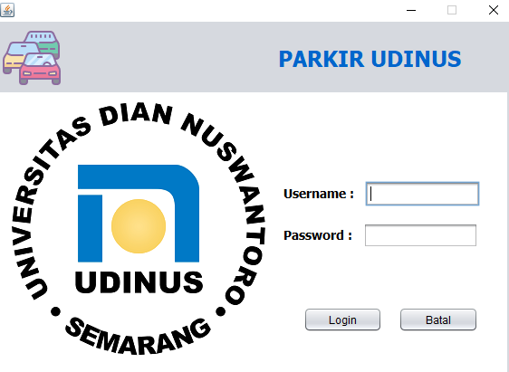
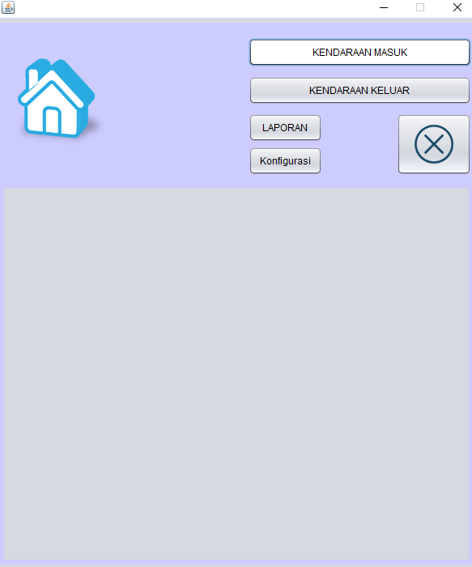
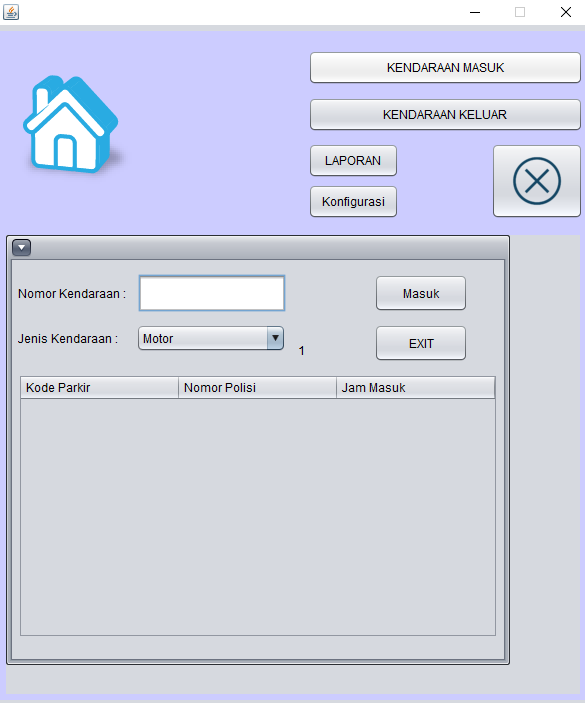
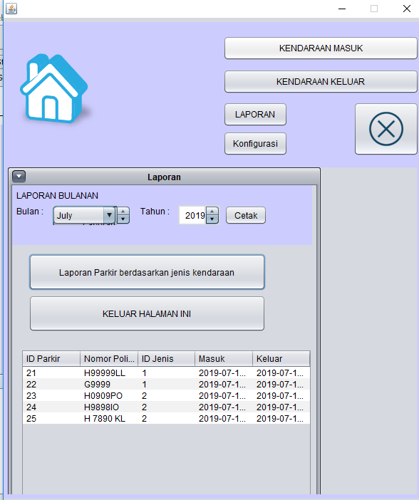
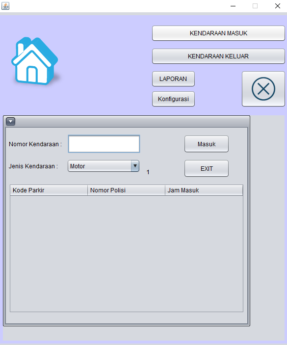

Sistem Parkir Udinus
Program berbasis java ini digunakan untuk memenuhi tugas akhir mata kuliah Pemrograman Berbasis Objek (PBO).
Program ini dapat melakukan input data, melihat data sehingga menghasilkan laporan perbulan berbentuk PDF yang dapat dicetak.
Yang digunakan untuk membuat website :
- - Netbeans
- - Java
- - MySql
Menu Login
Home

Input

Laporan

